An application of TDA
to (real) neural networks
TDA Seminar - Swansea University
Ximena Fernandez
joint work with Emilio Kropff and Sabrina Benas
from the Laboratory of Neuronal Plasticity, Leloir Institute, Buenos Aires
Geometric inference in the brain
Place cells
Place cells
Place cells
- Cognitive representation of a specific location in space.
- Placed in the hippocampus.
- Discovered by John O'Keefe in 1971.
J. O'Keefe, J. Dostrovsky, The hippocampus as a spatial map. Preliminary evidence from unit activity in the freely-moving rat. Brain Research, Volume 34, Issue 1, 1971, Pages 171-175. - Awarded with Nobel Prize in Physiology or Medicine 2014.
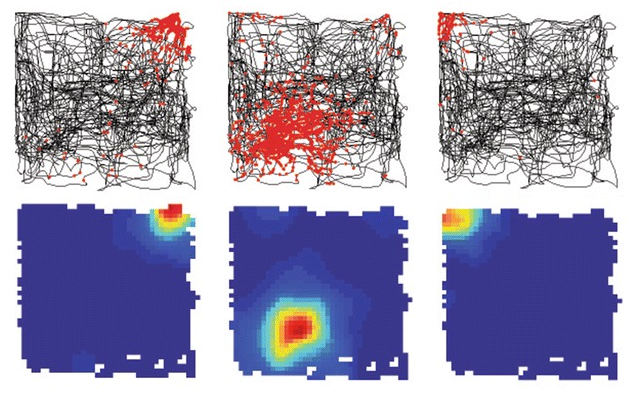
Grid cells
Grid cells
- Part of an environment-independent spatial coordinate system.
- Placed in the medial entorhinal cortex (mEC).
- Discovered by Edvard and May-Britt Moser in 2005.
T. Hafting, M. Fyhn, S, Molden, M.B. Moser, E.I. Moser. Microstructure of a spatial map in the entorhinal cortex. Nature. 2005 Aug; 436(7052) 801-806. - Awarded with Nobel Prize in Physiology or Medicine 2014.

Models for neural activity
A physical model for activity of grid cells
The Emergence of Grid Cells: Intelligent Design or Just Adaptation?
Emilio Kropff and Alessandro Treves. Hippocampus (2008)
Recurrently connected continuous attractor network.
- Input layer: $N_{hip}$ neurons from hippocampus (place cells).
- mEC layer: $N_{mEC}$ neurons from mEC (grid cells).
- Architecture:
- Feed-forward connections between input layer and mEC layer.
- Internal connections between grid-cells.
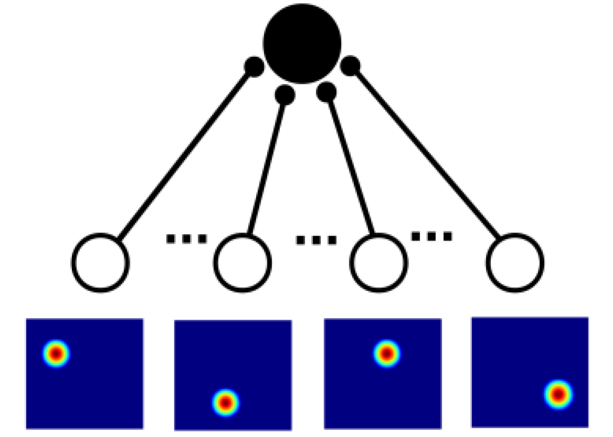
A physical model for grid cells activity
- Synaptic activation: \[h_i^t (x) = \sum_{j=1}^{N_{hip}}J_{ij}r_j^t (x) + \sum_{k=1}^{N_{mEC}}W_{ik}\psi_k^t(x)\]
where:
- $J_{ij}$ the weight of the synapse going from neuron $j$ in the input layer to neuron $i$ in the mEC layer;
- $r_j^t$ the firing rate of the place cell $j$ at time $t$ and position $x$;
- $W_{ik}$ the recurrent excitatory connectivity from neuron $k$ to neuron $i$ in the mEC layer;
- $\psi_k^t(x)$ the firing rate of the grid cell $k$ at time $t$ and position $x$.
Topology of the attractor
Toroidal topology of population activity in grid cells (2021)
Gardner R, Hermansen E, Pachitariu M, Burak Y, N, Dunn B, Moser M B, Moser E.
Experiment:
Given an arena and a rat moving freely in the environment, they recorded simultaneously the activity of $N_{mEC}$ grid cells at each point $x$ in the arena for a period of time.
For a discretization of the environment in $M$ bins and average over time of the spike rate, they obtained a pointcloud of $M$ points in $\mathbb R^{N_{mEC}}$.
Topology of the attractor

Architecture of the
neural network
Connectivity of the
excitatory recurrent network of grid cells
2D connectivity

$\bullet$ Gardner R, Hermansen E, Pachitariu M, Burak Y, N, Dunn B, Moser M B, Moser E. Toroidal topology of population activity in grid cells (2021)
$\bullet$ Guanella A, Kiper D, Verschure P. A model of grid cells based on a twisted torus topology. Int J Neural Syst. 2007 Aug; 17 (4):231-40.
1D connectivity 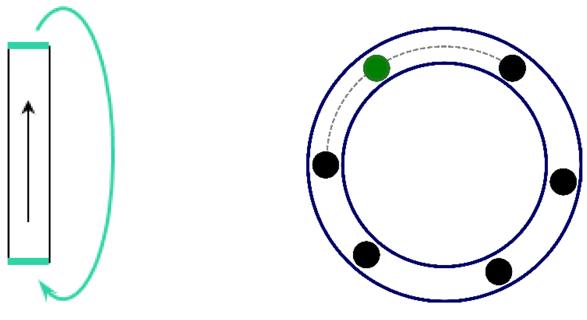
No connectivity
Experiment
2D connectivity 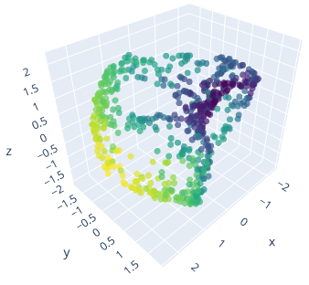
1D connectivity 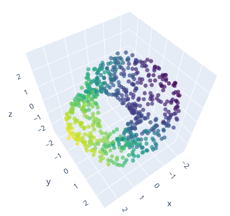
No connectivity 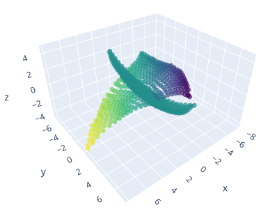
Persistent homology
(coefficient field $\mathbb{Z}_2$ and $\mathbb{Z}_3$)
2D connectivity

1D connectivity 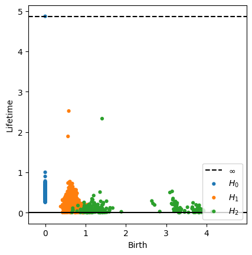
No connectivity 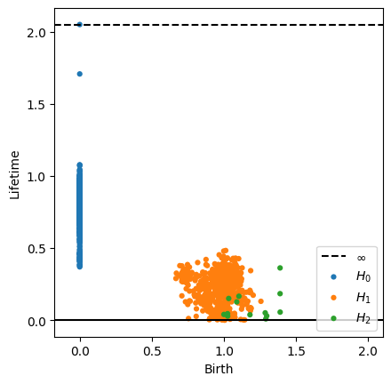
Persistent homology
Frechet mean
2D connectivity

1D connectivity

No connectivity 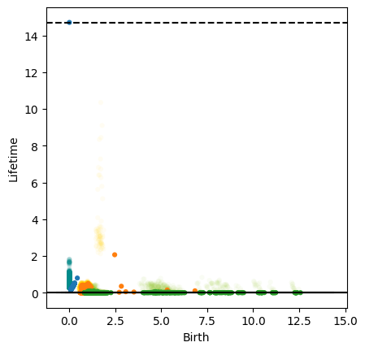
Intrinsic dimension
Local PCA
2D connectivity

1D connectivity 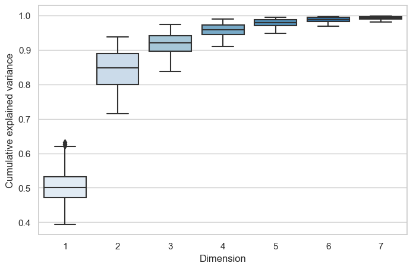
No connectivity

Local (persistent) homology
Compute an estimate of $H_1(B_x(r), \{x\})$ for every $x$.
2D connectivity

1D connectivity

No connectivity

Stolz BJ, Tanner J, Harrington HA, Nanda V. Geometric anomaly detection in data. Proceedings of the National Academy of Sciences of the United States of America. 2020 Aug; 117(33):19664-19669
From neural activity to
neural network architecture
Experiment
2D connectivity 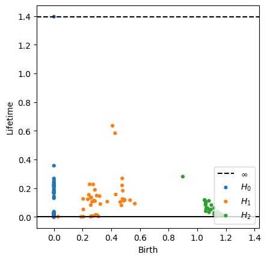
1D connectivity

No connectivity 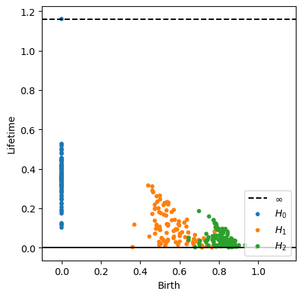
Persistence diagram
Frechet mean and variance
2D connectivity

1D connectivity 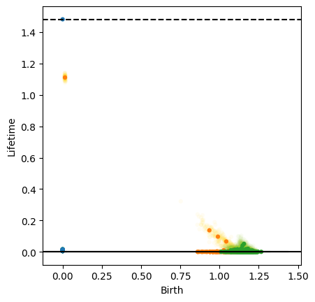
No connectivity